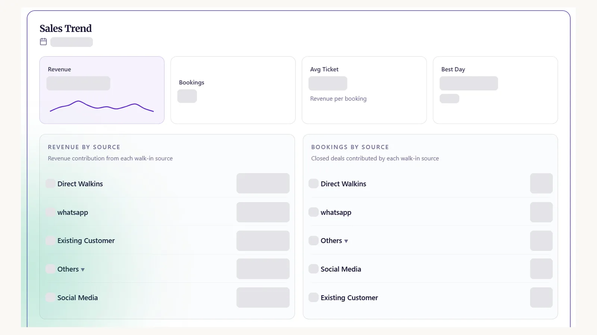
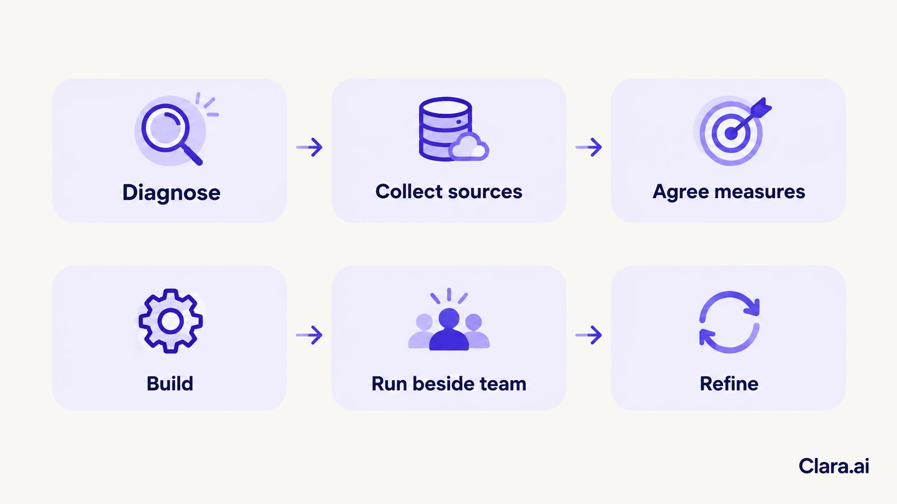

An operations intelligence dashboard for multi-branch retail brings sales, stock, customer enquiries and response times from every branch into one live view. It shows managers which branches are slipping and why, so they act the same day. People still make the decisions; the dashboard shows where to look.
It is Monday, 9 am, in Riyadh. A regional manager opens three spreadsheets, a sales report from head office and a WhatsApp group full of branch updates. One branch missed its weekend target. Another has a bestseller out of stock. Nobody knows which problem started first. By the time she finds out, the week has begun.
Every branch keeps its own records. Sales sit in the point-of-sale system. Stock sits in another tool. Customer enquiries arrive by phone, WhatsApp and the website, and few of them are counted. Reports are built by hand, often once a week.
That creates three gaps.
It shows the numbers a manager needs, for every branch, in one place. A typical view covers:

A good dashboard also explains. If one branch's conversions fall, it shows whether enquiries dropped, replies slowed or stock ran out. The manager sees the cause, not just the dip.
It uses the systems you already run: point-of-sale, inventory, your CRM and your spreadsheets. It also uses the conversations handled by your AI web chatbot, your WhatsApp chatbot for business and your AI calling agent.
In the Gulf, many enquiries start on WhatsApp and the website together. A dashboard that ignores chat misses the front of the sales funnel.
Clara AI starts by checking which sources can be trusted. Where two systems disagree on a figure, we agree which one is the reference before any chart is built on it.
Clara AI built this for Nilkamal Sleep, a retail network in India. Their management uses a smart dashboard to track the performance of their retail stores in real time. It monitors sales, footfall, scheme qualification and store-level KPIs across the entire network.
Leadership gets one live, consolidated view of every store. That makes it faster to decide where to act and to plan targeted interventions for the stores that need them.
Clara AI also deployed a "Virtual AI CEO" for Nilkamal Sleep. It is an AI layer that takes in business data, surfaces insights, flags underperformance and gives management executive-level recommendations. The decisions stay with their leadership.
A Gulf retailer with branches across Riyadh, Jeddah and Dubai faces the same questions: which stores are slipping, why, and what to do this week. The data sources differ, but the approach is the same.
People make every decision. The dashboard flags a branch with slow replies or low stock, and the manager chooses what to do. Alerts go to a named person, not a general inbox.
Access follows the role. Branch staff see their own branch. Head office sees all of them. For retailers in Saudi Arabia, the PDPL (Personal Data Protection Law) governs customer details, so we limit who can see them and review that setting with you.
The dashboard shows patterns in operations. It is not built to rank individual staff.
Clara AI builds, deploys and manages AI chatbots, AI calling agents and operations dashboards, for retailers and other businesses in India and the Gulf.
